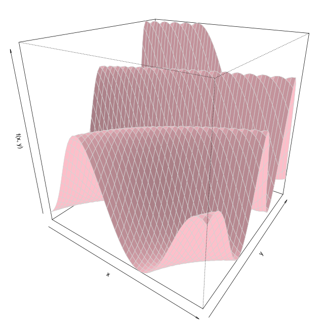

Calculation of a Simple Feature
For simple features you typically only need to supply the data that you have at hand. For this, the arguments X and y should be passed towards createFeatureObject, as illustrated in the example below.
The function createFeatureObject creates a FeatureObject instance, which holds relevant information about the input data. These instances are always the first argument to any feature-calculating function in flacco.
library(flacco)
## (1) Create some example-data
X = createInitialDesign(n.obs = 500, dim = 2)
y = apply(X, 1, function(x) sum(sin(x) * x^2 + (x - 0.5)^3))
## (2) Compute the feature object
feat.object = createFeatureObject(X = X, y = y)
## (3) Have a look at feat.object
print(feat.object)
## (4) Calculate a feature set, e.g. the ELA meta model features
calculateFeatureSet(feat.object, set = "ela_meta")
Calculation of Expensive Features
Some features need to perform further function evaluations in order to compute the feature values. Therefore, one can pass the function fun to the FeatureObject.
Note, that it is also possible to only pass X and fun to createFeatureObject — the values of y will be automatically be computed!
For example, the feature set "ela_conv" needs to know the original function. But don’t worry — if you don’t pass the function, calculateFeatureSet will complain and give you a hint.
library(flacco)
## (1) Create data (note that objective values are not set here!)
X = createInitialDesign(n.obs = 2000, dim = 5)
## (2) Compute the feature object
feat.object = createFeatureObject(X = X, fun = function(x) sum(x^2))
## (3) Have a look at feat.object
print(feat.object)
## (4) Calculate the ELA convexity features
calculateFeatureSet(feat.object, set = "ela_conv")
Usually, you find more information on the exact number of additional function evaluations within the documentation of calculateFeatureSet. The following example shows you, how you could control the size of the generated sample:
## Calculate the convexity features using a sample of size 500,
## instead of the default of 1000.
calculateFeatureSet(feat.object, set = "ela_conv", control = list(ela_conv.nsample = 500))
A lot of our functions allow to configure certain details on how features should be computed using the control list parameter. However, as each function supports different parameters it is advisable to have a look into the corresponding documentation ?calculateFeatureSet.
Calculation of a Cell Mapping Feature
Cell mapping features differ from the others in the fact that they convert a continuous search space into a discretized one. This is achieved by dividing the entire search space into a grid with a finite amount of cells (per dimension) and assigning each observation to exactly one cell. Afterwards, the search space is only regarded as a set of discrete cells.
Consequently, you need to define the grid by specifying the number of cells per dimension when creating a FeatureObject. If you don’t provide them, the attempt of computing a cell mapping feature will abort with an error.
library(flacco)
## (1) Create data
X = createInitialDesign(n.obs = 2000, dim = 5)
y = rowSums(X^2)
## (2) Compute a feature object
feat.object = createFeatureObject(X = X, y = y, blocks = c(10, 5, 5, 8, 4))
## (3) Have a look at feat.object
print(feat.object)
## (4) Calculate cell mapping features, e.g. the gradient homogeneity features
calculateFeatureSet(feat.object, set = "cm_grad")
The above example splits the data into 10 blocks in the first dimension, 5 blocks in the second and third, 8 blocks in the fourth, and 4 blocks in the fifth. If you always want the same amount of blocks in every dimension, you can simplify your input:
## Compute the feature object
feat.object = createFeatureObject(X = X, y = y, blocks = 5)
Creating Explanatory Plots
Some features come with additional plots that visualize the features or intermediate results. For example, the mechanics behind the Generalized Cell Mapping approach are sometimes hard to grasp. For that reason, a plot visualizes a (two-dimensional) grid and indicated the transition probabilities from any cell to its basins using proportional arrows. Also, the Barrier Tree usually become more clear, when visualizing them.
library(smoof)
library(flacco)
## (1) Create data
X = expand.grid(seq(0, 1, length.out = 50), seq(0, 1, length.out = 50))
f = smoof::makeBBOBFunction(dimension = 2, fid = 17, iid = 9)
y = apply(X, 1, f)
## (2) Compute a feature object
feat.object = createFeatureObject(X = X, y = y, fun = f, blocks = c(10, 10))
## (3) Now, one could create various explanatory plots
## (3a) Visualize the figure in a 3D perspective/surface plot
persp(matrix(y, nrow = 50), shade = 0.1, theta = 35, phi = 25,
border = "lightgrey", zlab = "f(x, y)", xlab = "x", ylab = "y", col = "pink")
## (3b) Based on a combination of 'persp' and the barrier tree idea,
## one now can produce 3D plots of the barrier trees
ctrl = list(gcm.approach = "near", bt.persp_border = "lightgrey",
bt.persp_theta = 35, bt.persp_phi = 25, bt.color_surface = "pink",
bt.persp_shade = 0.1, bt.persp_ticktype = "simple",
bt.persp_xlab = "x", bt.persp_ylab = "y", bt.persp_zlab = "f(x, y)")
plotBarrierTree3D(feat.object, control = ctrl)
## (3c) The barrier trees can also be visualized in a 2D plot
plotBarrierTree2D(feat.object, control = list(gcm.approach = "near", bt.cm_surface = FALSE))
## (3d) Alternatively, one can plot the cell mappings
plotCellMapping(feat.object, control = list(gcm.approach = "near"))
The following plots represent the figures, which were created by the R-code above.
